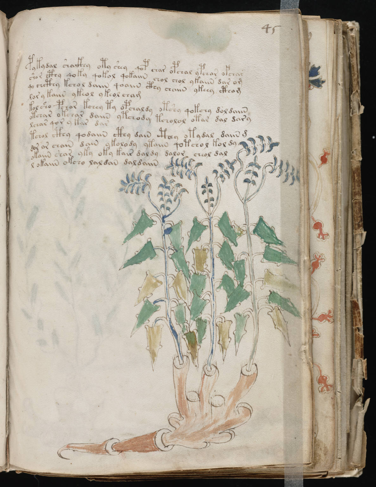

f45r
1pykydal shaikhy oty shey qop char opchal ypchar ofchar2shor cthy qoky qokol qokaiin chol chol ykaiin dar om3qo chcthy kchol daiin qoaiin cthy chaiin ykeey cthom4lory kaiin ykeol ykeol cham5kolsho pchor kchey ty opchaldy otshy qokchy doldaiin6otchar okchar daiin ytchody tcholol otar dal dary7lchar qor y kar dar8tchol cthy qodaiin cthy dain cthey otydal daiin m9dor or chain dain ykolody ytaiin qotchol kol dy10okaiin shar yky oky kair daldy dalor cheol dal11l okaiin okcho laldan daldaiin
